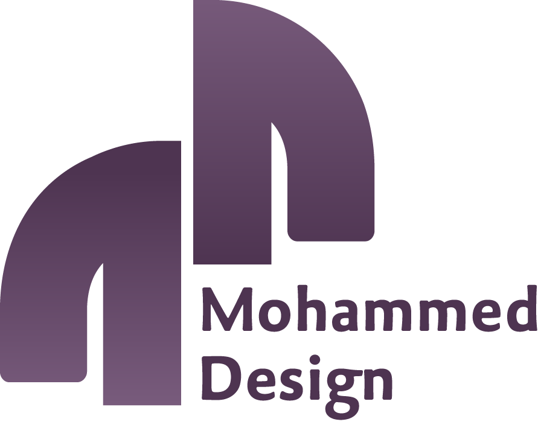

CRO Systemالهدف الأساسي هو إيقاف عشوائية تطبيق "واتساب" والاعتماد على بيئة مؤتمتة تحقق الاستقلال الإداري والتشغيلي التام.
يسير الطلب آلياً بين الفروع، الشيف والمندوب دون الحاجة لتدخل الإدارة العليا.
أربعة مستويات من الأذونات تضمن كفاءة وحماية العمليات والبيانات المالية الحساسة.
هيكلية ذكية تتيح النمو المستقبلي وتدعم إضافة معامل توريد جديدة دون أي حاجة لتعديل كود النظام الأساسي.
تفصيل دقيق لتسلسل الحالات ومسار الاستثناء الإداري عند حدوث مشاكل تسليم.
بناء الشراكة والمنفعة المتبادلة وتأكيد جودة الخدمة قبل الالتزام المالي الطويل.
| البند والبيان | التكلفة المادية | ملاحظات الدعم والترخيص |
|---|---|---|
| تأسيس واستضافة لوحة التحكم والإدارة | مجاناً بالكامل | شامل النطاق (Domain) والاستضافة السنوية الحرة. |
| حسابات المعامل (الشيف) والفروع (الكافيهات) | عدد غير محدود | صلاحية إنشاء أي عدد من الفروع والمستخدمين مستقبلاً. |
| اشتراك وحسابات المناديب والتوجيه | 150 ريال / شهرياً لكل مندوب نشط | يتم احتساب المندوب الفعلي المرتبط بالنظام فقط. |
| فترة التجربة والضمان التشغيلي | شهر كامل مجاناً | تبدأ من تاريخ الإطلاق الفعلي والتسليم الميداني للفرع. |
تسلسل زمني محكم ومدروس لضمان جودة الأكواد والتسليم الآمن دون أي انقطاع في العمليات الحالية.
نحن لا نقدم أكواداً برمجية فحسب، بل شريك تقني يضمن حماية واستمرارية ونمو أعمالكم التشغيلية بيسر وسهولة.
مراقبة وحل أي مشكلات طارئة في النظام لضمان عدم توقف تدفق الطلبات اليومية للفروع والمعامل.
تفعيل نسخ احتياطي دوري وتلقائي لقواعد البيانات لضمان أمان سجلات التوريد والمناديب والتقارير المالية.
ترقية خوادم الاستضافة وتحسين جودة الأداء والأمان دورياً لمواكبة تحديثات المتصفحات العالمية وأنظمة الجوال.
دعنا ننقل عمليات التوريد واللوجستيات في CRO إلى العصر الرقمي المحوكم والمستقل بالكامل.